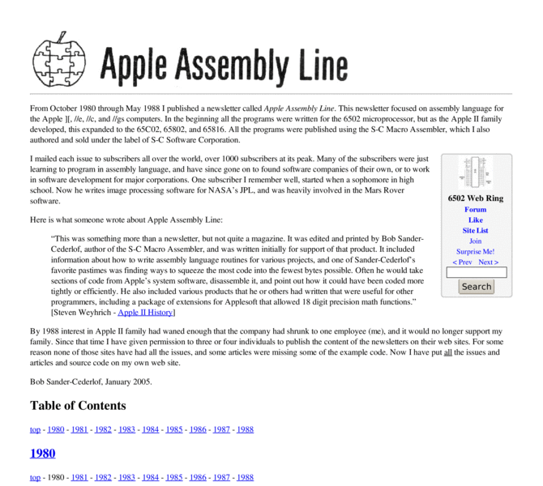

Previewing: Apple Assembly Line Archive Previewing: Apple Assembly Line Archive 
Use the left/right red arrow controls to navigate through this ring - Click the preview image to visit the member site.

From October 1980 through June 1988 I published a newsletter called Apple Assembly Line. This newsletter focussed on assembly language for the Apple ][, //e, //c, and //gs computers. In the beginning all the programs were written for the 6502 microprocessor, but as the Apple II family developed, this expanded to the 65C02, 65802, and 65816. All the issues are posted on this site.
Apple Assembly Line Archive owned by:
 bobsc bobsc
A member of 6502 Web Ring since 02/23/2005.
|
|